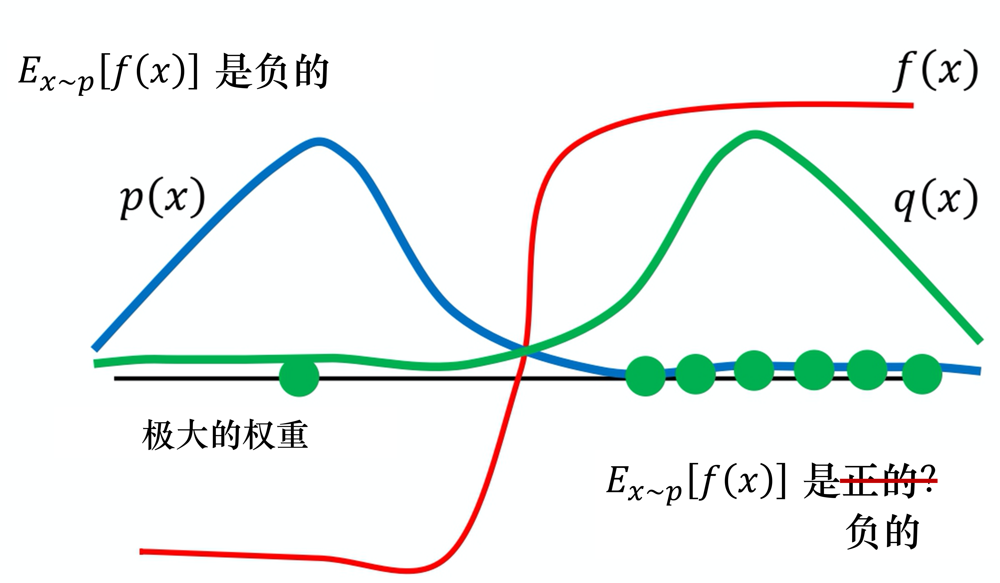

上一篇介绍的 TRPO 算法在很多场景上的应用都很成功，但是我们也发现它的计算过程非常复杂，每一步更新的运算量非常大。于是，TRPO 算法的改进版——PPO 算法在 2017 年被提出，PPO 基于 TRPO 的思想，但是其算法实现更加简单。并且大量的实验结果表明，与 TRPO 相比，PPO 能学习得一样好（甚至更快），这使得 PPO 成为非常流行的强化学习算法。如果我们想要尝试在一个新的环境中使用强化学习算法，那么 PPO 就属于可以首先尝试的算法。
让我们回忆一下策略梯度。策略梯度是同策略的算法，因为在策略梯度中，我们需要一个智能体、一个策略和一个演员。演员去与环境交互搜集数据，搜集很多的轨迹τ，根据搜集到的数据按照策略梯度的公式更新策略的参数，所以策略梯度是一个同策略的算法。PPO是策略梯度的变形，它是现在 OpenAI 默认的强化学习算法。
∇Rθˉ=Eτ∼pθ(τ)[R(τ)∇logpθ(τ)]
问题在于上式的Eτ∼pθ(τ)是对策略πθ采样的轨迹τ求期望。一旦更新了参数，从θ变成θ′，概率pθ(τ)就不对了，之前采样的数据也不能用了。所以策略梯度是一个会花很多时间来采样数据的算法，其大多数时间都在采样数据。智能体与环境交互以后，接下来就要更新参数。我们只能更新参数一次，然后就要重新采样数据， 才能再次更新参数。这显然是非常花时间的，所以我们想要从同策略变成异策略，这样就可以用另外一个策略πθ′、另外一个演员θ′与环境交互（θ′被固定了），用θ′采样到的数据去训练θ。假设我们可以用θ′采样到的数据去训练θ，我们可以多次使用θ′采样到的数据，可以多次执行梯度上升（gradient ascent），可以多次更新参数，都只需要用同一批数据。因为假设θ有能力学习另外一个演员θ′所采样的数据，所以θ′只需采样一次，并采样多一点的数据，让θ去更新很多次，这样就会比较有效率。
重要性采样
对于一个随机变量，我们通常用概率密度函数来刻画该变量的概率分布特性。具体来说，给定随机变量的一个取值，可以根据概率密度函数来计算该值对应的概率（密度）。反过来，也可以根据概率密度函数提供的概率分布信息来生成随机变量的一个取值，这就是采样。因此，从某种意义上来说，采样是概率密度函数的逆向应用。与根据概率密度函数计算样本点对应的概率值不同，采样过程往往没有那么直接，通常需要根据待采样分布的具体特点来选择合适的采样策略。
假设我们现在有一个函数f(x)，要计算从分布p采样x，再把x代入f，得到f(x)。那么该如何计算f(x)的期望呢？假设不能对分布p做积分，但可以从分布p采样出一些数据xi。把xi代入f(x)，取它的平均值，就可以近似f(x)的期望值。
现在有另外一个问题，假设我们不能从分布p采样数据，只能从另外一个分布q采样数据x，q可以是任何分布。如果我们从q采样xi，就不能使用下式。因为下式是假设x都是从p采样出来的。
Ex∼p[f(x)]≈N1i=1∑Nf(xi)
所以我们做一个修正，期望值Ex∼p[f(x)]就是∫f(x)p(x)dx，我们对其做如下的变换：
∫f(x)p(x)dx=∫f(x)q(x)p(x)q(x)dx=Ex∼q[q(x)p(x)f(x)]
可得
Ex∼p[f(x)]=Ex∼q[f(x)q(x)p(x)]
我们就可以写成对q里面所采样出来的x取期望值。我们从q里面采样x，再计算f(x)q(x)p(x)，再取期望值。所以就算我们不能从p里面采样数据，但只要能从q里面采样数据，就可以计算从p采样x代入f以后的期望值。
因为是从q采样数据，所以我们从q采样出来的每一笔数据，都需要乘一个重要性权重q(x)p(x)来修正这两个分布的差异。重要性采样的关键条件是：q 的支撑集必须包含 p 的支撑集，即当 p(x)>0 时，必须有 q(x)>0。换句话说，q 必须在 p 有非零概率的所有区域都分配非零概率，否则重要性权重 q(x)p(x) 将在某些点无定义。在满足上述条件的情况下，我们可以使用重要性采样，将对 p 的期望估计转换为对 q 采样的加权平均。
重要性采样有一些问题。虽然我们可以把p换成任何的q。但是在实现上，p和q的差距不能太大。差距太大，会有一些问题。
例如，当p(x)和q(x)差距很大时，就会有问题。如图所示，假设蓝线是p(x)的分布，绿线是q(x)的分布，红线是f(x)。如果我们要计算f(x)的期望值，从分布p(x)做采样，显然Ex∼p[f(x)]是负的。这是因为左边区域p(x)的概率很高，所以采样会到这个区域，而f(x)在这个区域是负的， 所以理论上这一项算出来会是负的。
接下来我们改成从q(x)采样，因为q(x)在右边区域的概率比较高，所以如果我们采样的点不够多，可能只会采样到右侧。如果我们只采样到右侧，可能Ex∼q[f(x)q(x)p(x)]是正的。我们这边采样到这些点，去计算它们f(x)q(x)p(x)都是正的。我们采样到这些点都是正的，取期望值以后也都是正的，这是因为采样的次数不够多。假设我们采样次数很少，只能采样到右边。左边虽然概率很低，但也有可能被采样到。假设我们好不容易采样到左边的点，因为左边的点的p(x)和q(x)是差很多的，这边p(x)很大，q(x)很小。f(x)好不容易终于采样到一个负的，这个负的就会被乘上一个非常大的权重，这样就可以平衡刚才那边一直采样到正的值的情况。最终我们算出这一项的期望值，终究还是负的。但前提是我们要采样足够多次，这件事情才会发生。但有可能采样次数不够多，Ex∼p[f(x)]与Ex∼q[q(x)p(x)f(x)]可能就有很大的差距。这就是重要性采样的问题。

现在要做的就是把重要性采样用在异策略的情况中，把同策略训练的算法改成异策略训练的算法。之前我们用策略πθ与环境交互，采样出轨迹τ，计算R(τ)∇logpπ(τ)。现在我们不用θ与环境交互，假设有另外一个策略πθ′，它就是另外一个演员，它的工作是做示范。
∇Rθˉ=Eτ∼pθ′(τ)[pθ′(τ)pθ(τ)R(τ)∇logpθ(τ)]
我们把θ换成θ′后，要补上一个重要性权重pθ′(τ)pθ(τ)。这个重要性权重就是某一个轨迹τ用θ算出来的概率除以这个轨迹τ用θ′算出来的概率。这一项是很重要的，因为我们要学习的是演员θ，而θ和θ′是不太一样的，θ′见到的情形与θ见到的情形可能不是一样的，所以中间要有一个修正的项。
实际在做策略梯度的时候，我们并不是给整个轨迹τ一样的分数，而是将每一个状态-动作对分开计算。实际更新梯度的过程可写为
E(st,at)∼πθ[Aθ(st,at)∇logpθ(atn∣stn)]
我们用演员θ采样出st与at，采样出状态-动作的对，我们会计算这个状态-动作对的优势Aθ(st,at)， 就是它有多好。Aθ(st,at)即用累积奖励减去基线，这一项就是估测出来的。它要估测的是，在状态st采取动作at是好的还是不好的。接下来在后面乘∇logpθ(atn∣stn)，也就是如果Aθ(st,at)是正的，就要增大概率；如果是负的，就要减小概率。
我们可以通过重要性采样把同策略变成异策略，从θ变成θ′。所以现在st、at是θ′与环境交互以后所采样到的数据。但是训练时，要调整的参数是模型θ。因为θ′与θ是不同的模型，所以我们要有一个修正的项。这个修正的项，就是用重要性采样的技术，把st、at用θ采样出来的概率除以st、at用θ′采样出来的概率。
E(st,at)∼πθ′[pθ′(st,at)pθ(st,at)Aθ(st,at)∇logpθ(atn∣stn)]
其中，Aθ(st,at)有一个上标θ，θ代表Aθ(st,at)是演员θ与环境交互的时候计算出来的。但是实际上从θ换到θ′的时候，Aθ(st,at)应该改成Aθ′(st,at)，为什么呢？Aθ(st,at)这一项是想要估测在某一个状态采取某一个动作，接下来会得到累积奖励的值减去基线的值。我们怎么估计Aθ(st,at)?我们在状态st采取动作at，接下来会得到的奖励的总和，再减去基线就是Aθ(st,at)。之前是θ与环境交互，所以我们观察到的是θ可以得到的奖励。但现在是θ′与环境交互，所以我们得到的这个优势是根据θ所估计出来的优势。但我们现在先不要管那么多，就假设Aθ(st,at)和Aθ′(st,at)可能是差不多的。
接下来，我们可以拆解pθ(st,at)和pθ′(st,at)，即
pθ(st,at)pθ′(st,at)=pθ(at∣st)pθ(st)=pθ′(at∣st)pθ′(st)
于是我们可得
E(st,at)∼πθ′[pθ′(at∣st)pθ(at∣st)pθ′(st)pθ(st)Aθ′(st,at)∇logpθ(atn∣stn)]
这里需要做的一件事情是，假设模型是θ的时候，我们看到st的概率，与模型是θ′的时候，我们看到st的概率是一样的，即pθ(st)=pθ′(st)。可得
E(st,at)∼πθ′[pθ′(at∣st)pθ(at∣st)Aθ′(st,at)∇logpθ(atn∣stn)](⋆)
Q：为什么我们可以假设pθ(st)=pθ′(st)？
A：因为我们会看到状态往往与采取的动作是没有太大的关系的。所以也许不同的θ对st是没有影响的。但更直接的理由就是pθ(st)很难算，pθ(st)有一个参数θ，它表示的是我们用θ去与环境交互，计算st出现的概率，而这个概率很难算。尤其是如果输入的是图片，同样的st可能根本就不会出现第二次。我们根本没有办法估计pθ(st)，所以干脆就无视这个问题。
但是pθ(at∣st)很好算，我们有参数θ，它就是一个策略网络。我们输入状态st到策略网络中，它会输出每一个at的概率。所以我们只要知道θ和θ′的参数就可以计算pθ′(at∣st)pθ(at∣st)
式(⋆)是梯度，我们可以从梯度反推原来的目标函数：
∇f(x)=f(x)∇logf(x)
注意，对θ求梯度时，pθ′(at∣st)和Aθ′(st,at)都是常数。
所以实际上，当我们使用重要性采样的时候，要去优化的目标函数为
Jθ′(θ)=E(st,at)∼πθ′[pθ′(at∣st)pθ(at∣st)Aθ′(st,at)]
我们将其记为Jθ′(θ)，因为Jθ′(θ)括号里面的θ代表我们要去优化的参数。θ′是指我们用θ′做示范，就是现在真正在与环境交互的是θ′。因为θ不与环境交互，是θ′在与环境交互。然后我们用θ′与环境交互，采样出st、at以后，要去计算st与at的优势Aθ′(st,at)，再用它乘pθ′(at∣st)pθ(at∣st)。pθ′(at∣st)pθ(at∣st)是容易计算的，我们可以从采样的结果来估测Aθ′(st,at)，所以Jθ′(θ)是可以计算的。实际上在更新参数的时候，我们就是按照式(⋆)来更新参数的。
近端策略优化PPO
我们可以通过重要性采样把同策略换成异策略，但重要性采样有一个问题：如果pθ(at∣st)与pθ′(at∣st)相差太多，即这两个分布相差太多，重要性采样的结果就会不好。 怎么避免它们相差太多呢？这就是PPO要做的事情。
如下式所示，PPO 需要优化目标函数Jθ′(θ)。但是这个目标函数又牵涉到重要性采样。在做重要性采样的时候，pθ(at∣st)不能与pθ′(at∣st)相差太多。我们在训练的时候，应多加一个约束（constrain）。这个约束是θ与θ′输出的动作的 KL 散度，这一项用于衡量θ与θ′的相似程度。我们希望在训练的过程中，学习出的θ与θ′越相似越好。因为如果θ与θ′不相似，最后的结果就会不好。所以在 PPO 里面有两项：一项是优化本来要优化的Jθ′(θ)，另一项是一个约束。这个约束就好像正则化的项一样，它所做的就是希望最后学习出的θ与θ′相差不大。注意，虽然 PPO 的优化目标涉及到了重要性采样，但其只用到了上一轮策略θ′的数据。PPO 目标函数中加入了 KL 散度的约束，行为策略θ′和目标策略θ非常接近，PPO 的行为策略和目标策略可认为是同一个策略，因此 PPO 是同策略算法。
JPPOθ′(θ)Jθ′(θ)=Jθ′(θ)−βKL(θ,θ′)=E(st,at)∼πθ′[pθ′(at∣st)pθ(at∣st)Aθ′(st,at)]
上一节我们提到TRPO算法，实际上PPO算法是TRPO算法的优化。TRPO算法最终的优化目标为：
JTRPOθ′(θ)=E(st,at)∼πθ′[pθ′(at∣st)pθ(at∣st)Aθ′(st,at)],KL(θ,θ′)<δ
TRPO 与 PPO 不一样的地方是约束所在的位置不一样，PPO 直接把约束放到要优化的式子里面，我们就可以用梯度上升的方法去最大化JPPOθ′(θ)。但 TRPO 是把 KL 散度当作约束，它希望θ与θ′的 KL 散度小于δ。如果我们使用的是基于梯度的优化，有约束是很难处理的。TRPO 是很难处理的，因为它把 KL 散度约束当作一个额外的约束，没有放在目标里面，所以它很难计算。因此我们一般就使用 PPO，而不使用 TRPO 。PPO 与 TRPO 的性能差不多，但 PPO 在实现上比 TRPO 容易得多。
KL 散度到底指的是什么？这里我们直接把 KL 散度当作一个函数，输入是θ与θ′，但并不是把θ或θ′当作一个分布，计算这两个分布之间的距离。所谓的θ与θ′的距离并不是参数上的距离，而是行为上的距离。假设我们有两个演员——θ和θ′，所谓参数上的距离就是计算这两组参数有多相似。这里讲的不是参数上的距离， 而是它们行为上的距离。我们先代入一个状态s，它会对动作的空间输出一个分布。假设我们有 3 个动作，3 个可能的动作就输出 3 个值。行为距离就是，给定同样的状态，输出动作之间的差距。这两个动作的分布都是概率分布，所以我们可以计算这两个概率分布的 KL 散度。把不同的状态输出的这两个分布的 KL 散度的平均值就是我们所指的两个演员间的 KL 散度。
Q：为什么不直接计算θ和θ′之间的距离？计算这个距离甚至不用计算 KL 散度，L1 与 L2 的范数也可以保证θ与θ′很相似。
A：在做强化学习的时候，之所以我们考虑的不是参数上的距离，而是动作上的距离，是因为很有可能对于演员，参数的变化与动作的变化不一定是完全一致的。有时候参数稍微变了，它可能输出动作的就差很多。或者是参数变很多，但输出的动作可能没有什么改变。所以我们真正在意的是演员的动作上的差距，而不是它们参数上的差距。因此在做 PPO 的时候，所谓的 KL 散度并不是参数的距离，而是动作的距离。
PPO惩罚
近端策略优化惩罚算法先初始化一个策略的参数θ。在每一个迭代里面，我们用前一个训练的迭代得到的演员的参数θk与环境交互，采样到大量状态-动作对。根据θk交互的结果，我们估测Aθk(st,at)。我们使用 PPO 的优化公式。但与原来的策略梯度不一样，原来的策略梯度只能更新一次参数，更新完以后，我们就要重新采样数据。但是现在不同，我们用θk与环境交互，采样到这组数据以后，我们可以让θ更新很多次，想办法最大化目标函数，如下式所示。这里面的θ更新很多次也没有关系，因为我们已经有重要性采样，所以这些经验，这些状态-动作对是从θk采样出来的也没有关系。θ可以更新很多次，它与θk变得不太一样也没有关系，我们可以照样训练
θ。
JPPOθk(θ)=Jθk(θ)−βKL(θ,θk)
在 PPO 的论文里面还有一个自适应KL散度。这里会遇到一个问题就，即β要设置为多少。这个问题与正则化一样，正则化前面也要乘一个权重，所以 KL 散度前面也要乘一个权重，但β要设置为多少呢？我们有一个动态调整β的方法。在这个方法里面，我们先设一个可以接受的 KL 散度的最大值。假设优化完上式以后，KL 散度的值太大，这就代表后面惩罚的项βKL(θ,θk)没有发挥作用，我们就把β增大。另外，我们设一个 KL 散度的最小值。如果优化完上市以后，KL 散度比最小值还要小，就代表后面这一项的效果太强了，我们怕他只优化后一项，使θ与θk一样，这不是我们想要的，所以我们要减小β。β是可以动态调整的，因此我们称之为自适应KL惩罚。我们可以总结一下自适应KL惩罚：
近端策略优化惩罚可表示为
JPPOθk(θ)Jθk(θ)=Jθk(θ)−βKL(θ,θk)≈(st,at)∑pθk(at∣st)pθ(at∣st)Aθk(st,at)
PPO截断
近端策略优化裁剪的目标函数里面没有 KL 散度，其要最大化的目标函数为
JPPO2θk(θ)≈(st,at)∑min(pθk(at∣st)pθ(at∣st)Aθk(st,at),clip(pθk(at∣st)pθ(at∣st),1−ϵ,1+ϵ)Aθk(st,at))
虽然上式看起来有点儿复杂，但实现起来是比较简单的，因为上式想要做的就是希望pθ(at∣st)与pθk(at∣st)比较接近，也就是做示范的模型与实际上学习的模型在优化以后不要差距太大。